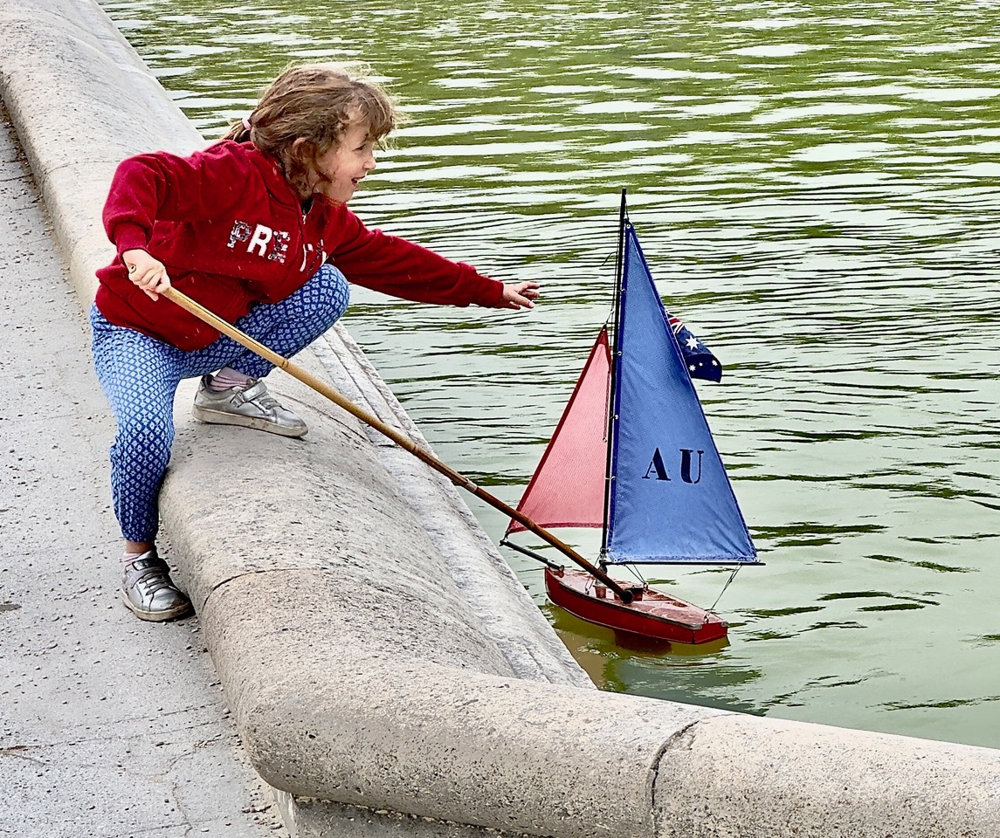

My Silk Roads October 2026: Costumes, A Family Affair
As a small child, I assumed that everyone’s mother created their Halloween costumes from scratch. Of course, as an adult I now know that is not the case. My mother chose the…

Scene Stealers: Brookfield Zoo Penguins Star in Holiday Movie
Filmed on location last December and premiering on Tubi November 10, “Christmas at the Zoo” is filled with animal encounters, authentic sights, sounds and seasonal atmosphere at…

Those Rare Teams Who Beat Parity in the NFL
The rules governing the most popular sports league in the United States always boost the worst teams and the smallest markets.

Chez Baillagou
Chez Baillagou is a country inn not far from our house: a sloping roof and a façade half-hidden by creepers, beneath tall plane trees at a crossroads, barely reveal its presence.…

Letter from Lausanne: Part II
The fishing village of Ouchy was incorporated into Lausanne in the mid-19th century. The Lausanne Train Station, which was built between 1911 and 1916, forms the border between…

Poems by Jean Colonomos
forty-five years have passed like a dream. It is a wonder that we are still here, together.